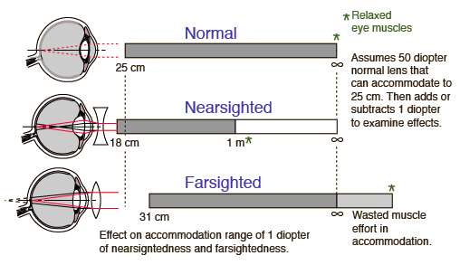

Common Vision Defects
Effect on Accommodation

Taking a nominal 50 diopter lens strength for the eye's lens combination, the effect of just a 1 diopter change in the lens strength upon accommodation can be assessed. It is more dramatic than you might expect with a 1 diopter nearsigntedness taking away clear vision beyond 1 meter and only adding 7 cm to the close-focusing capability. Fortunately, this defect can be corrected with just a -1 diopter corrective lens.
The person with 1 diopter of far-sightedness can go for many years without knowing it because they can focus clearly to infinity, and with a nominal close-focus distance of 31 cm, young eyes can likely focus more closely with effort. But with the loss of pliability of the internal lens in later years, they may have eye-strain headaches and reach the point where they cannot read at normal distances.
|